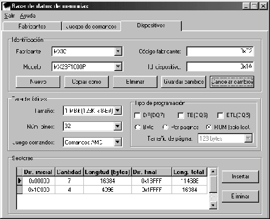

Figure:
Ventana de edición de memorias
|

|
La ventana de la figura ![[*]](crossref.png) nos permite
añadir, copiar, modificar y eliminar las memorias de la base de datos.
nos permite
añadir, copiar, modificar y eliminar las memorias de la base de datos.
De cada memoria se requieren los siguientes datos, que se pueden obtener
de las especificaciones (datasheet) publicadas por el fabricante:
- Nombre y código del fabricante.
- Código identificativo del modelo.
- Nombre del modelo.
- Tamaño total de la memoria.
- Número de pines.
- Juego de comandos que utiliza.
- Tipo de programación: programable byte a byte o por páginas o, si
no es programable a 5V, ROM. Así como los mecanismos de señalización
de estado de la grabación que soporta: data polling
(DP-DQ7), toggle bit (TB-DQ6) y/o exceeded
timing limit (ETL-DQ5).
- Tamaño de página, si es aplicable.
- Lista de sectores, si es que está organizada de tal forma. Para añadir
un sector sitúese sobre la tabla y pulse Insertar o desplacese
hasta la última fila y pulse el cursor-abajo; aparecerá una nueva
entrada con los campos vacíos para que los rellene. Si la memoria
tiene sectores consecutivos del mismo tamaño se recomienda indicar
el tamaño, la dirección del primer sector y el número de sectores
consecutivos, en vez de crear una entrada por cada sector. Para eliminar
una fila sitúese sobre ella y pulse Eliminar, a continuación
confirme la operación.
Los cambios realizados en esta pantalla no se harán efectivos hasta
que pulse en Guardar cambios o conteste afirmativamente a la
pregunta que se le hace al abandonar la pestaña o el gestor de la
base de datos.
Luis M. Cruz - Octubre 2003